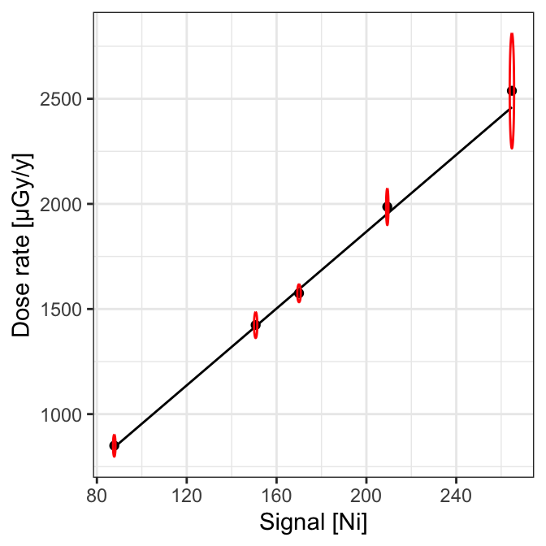
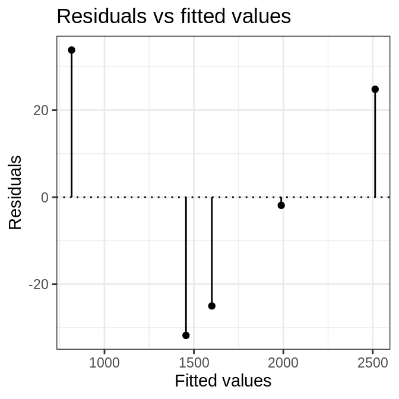

CEREGE Calibration Curve #1
Canberra Inspector 1000 - NaI
CEREGE Luminescence Team
2019-11-07
Source:vignettes/cerege_1.Rmd
cerege_1.RmdImport files
# Import CNF files for calibration
# Skip the first chanels
calib_dir <- system.file("extdata/AIX100/calibration", package = "gamma")
(calib_spc <- read(calib_dir))
#> A collection of 5 gamma spectra: BRIQUE, C341, C347, GOU, PEP
# Import CNF files for background noise measurement
# Skip the first chanels
noise_dir <- system.file("extdata/AIX100/background", package = "gamma")
(noise_spc <- read(noise_dir))
#> Gamma spectrum:
#> * name: PB
#> * date: 2019-03-27 12:06:02
#> * live time: 7707.42
#> * real time: 7714.93
#> * chanels: 1024
#> * energy range: -7 3124.91Energy scale calibration
Reference spectra
Lines used for energy scale calibration (in keV):
- Pb212: 238 (85)
- K40: 1461 (495)
- Tl208: 2615 (870)
BRIQUE
# Spectrum pre-processing and peak detection
pks <- calib_spc[["BRIQUE"]] %>%
slice_signal(-1:-40) %>%
stabilize_signal(sqrt) %>%
smooth_signal(method = "savitzky", m = 21) %>%
remove_baseline() %>%
find_peaks()
# Set energy values
set_energy(pks) <- c(238, NA, NA, NA, 1461, NA, NA, 2615)
# Recalibrate the energy scale
BRIQUE <- calibrate_energy(calib_spc[["BRIQUE"]], pks)
C341
# Spectrum pre-processing and peak detection
pks <- calib_spc[["C341"]] %>%
slice_signal(-1:-40) %>%
stabilize_signal(sqrt) %>%
smooth_signal(method = "savitzky", m = 21) %>%
remove_baseline() %>%
find_peaks()
# Set energy values
set_energy(pks) <- c(238, NA, NA, NA, 1461, NA, 2615)
# Recalibrate the energy scale
C341 <- calibrate_energy(calib_spc[["C341"]], pks)
C347
# Spectrum pre-processing and peak detection
pks <- calib_spc[["C347"]] %>%
slice_signal(-1:-40) %>%
stabilize_signal(sqrt) %>%
smooth_signal(method = "savitzky", m = 21) %>%
remove_baseline() %>%
find_peaks(span = 10)
# Set energy values
set_energy(pks) <- c(238, NA, NA, NA, NA, 1461, NA, 2615)
# Recalibrate the energy scale
C347 <- calibrate_energy(calib_spc[["C347"]], pks)
GOU
# Spectrum pre-processing and peak detection
pks <- calib_spc[["GOU"]] %>%
slice_signal(-1:-40) %>%
stabilize_signal(sqrt) %>%
smooth_signal(method = "savitzky", m = 21) %>%
remove_baseline() %>%
find_peaks()
# Set energy values
set_energy(pks) <- c(238, NA, NA, NA, 1461, NA, NA, 2615)
# Recalibrate the energy scale
GOU <- calibrate_energy(calib_spc[["GOU"]], pks)
PEP
# Spectrum pre-processing and peak detection
pks <- calib_spc[["PEP"]] %>%
slice_signal(-1:-40) %>%
stabilize_signal(sqrt) %>%
smooth_signal(method = "savitzky", m = 21) %>%
remove_baseline() %>%
find_peaks()
# Set energy values
set_energy(pks) <- c(238, NA, NA, NA, 1461, NA, NA, 2615)
# Recalibrate the energy scale
PEP <- calibrate_energy(calib_spc[["PEP"]], pks)Signal integration
# Integration range (in keV)
integration_range <- c(200, 2800)
# Integrate background noise
noise <- integrate_signal(noise_scaled, range = integration_range, NiEi = TRUE)
# Integrate reference spectra
calib_scaled <- list(BRIQUE, C341, C347, GOU, PEP)
calib_scaled <- methods::as(calib_scaled, "GammaSpectra")
signal <- integrate_signal(
calib_scaled,
range = integration_range,
noise = noise,
NiEi = TRUE,
simplify = TRUE
)| value | error | |
|---|---|---|
| noise | 1108.057 | 0.536 |
| BRIQUE | 110923.336 | 4.934 |
| C341 | 46657.016 | 5.215 |
| C347 | 81717.335 | 6.844 |
| GOU | 89644.921 | 7.153 |
| PEP | 139711.028 | 9.137 |
Build Calibration curve
Linear regression
# Build calibration curve
(AIX100 <- fit_dose(
calib_scaled,
noise_scaled,
range = integration_range,
intercept = TRUE,
details = list(
laboratory = "CEREGE",
instrument = "InSpector 1000",
detector = "NaI",
authors = "CEREGE Luminescence Team"
)
))
#> Calibration curve:
#> * Date: 2019-11-07 18:22:43
#> * Model summary:
#> - slope: 0.01824 +/- 0.00049
#> - intercept: -34.86828 +/- 48.01109
#> - residual standard error: 33.65
#> - multiple R-squared: 0.99787
#> - adjusted R-squared: 0.99716
#> - F-statistic: 1406 on 1 and 3 DF
# Plot Calibration curve
plot(AIX100) +
ggplot2::theme_bw()
Check model
#>
#> Call:
#> stats::lm(formula = fit_formula, data = fit_data, weights = fit_weights)
#>
#> Residuals:
#> 1 2 3 4 5
#> -1.872 33.828 -31.768 -24.998 24.811
#>
#> Coefficients:
#> Estimate Std. Error t value Pr(>|t|)
#> (Intercept) -3.487e+01 4.801e+01 -0.726 0.52
#> signal_value 1.824e-02 4.864e-04 37.499 4.17e-05 ***
#> ---
#> Signif. codes: 0 '***' 0.001 '**' 0.01 '*' 0.05 '.' 0.1 ' ' 1
#>
#> Residual standard error: 33.65 on 3 degrees of freedom
#> Multiple R-squared: 0.9979, Adjusted R-squared: 0.9972
#> F-statistic: 1406 on 1 and 3 DF, p-value: 4.172e-05
R session
#> R version 3.6.1 (2017-01-27)
#> Platform: x86_64-pc-linux-gnu (64-bit)
#> Running under: Ubuntu 16.04.6 LTS
#>
#> Matrix products: default
#> BLAS: /home/travis/R-bin/lib/R/lib/libRblas.so
#> LAPACK: /home/travis/R-bin/lib/R/lib/libRlapack.so
#>
#> locale:
#> [1] LC_CTYPE=en_US.UTF-8 LC_NUMERIC=C
#> [3] LC_TIME=en_US.UTF-8 LC_COLLATE=en_US.UTF-8
#> [5] LC_MONETARY=en_US.UTF-8 LC_MESSAGES=en_US.UTF-8
#> [7] LC_PAPER=en_US.UTF-8 LC_NAME=C
#> [9] LC_ADDRESS=C LC_TELEPHONE=C
#> [11] LC_MEASUREMENT=en_US.UTF-8 LC_IDENTIFICATION=C
#>
#> attached base packages:
#> [1] stats graphics grDevices utils datasets methods base
#>
#> other attached packages:
#> [1] magrittr_1.5 gamma_0.2.0
#>
#> loaded via a namespace (and not attached):
#> [1] Rcpp_1.0.2 highr_0.8 compiler_3.6.1 pillar_1.4.2
#> [5] later_1.0.0 tools_3.6.1 digest_0.6.22 evaluate_0.14
#> [9] memoise_1.1.0 tibble_2.1.3 gtable_0.3.0 pkgconfig_2.0.3
#> [13] rlang_0.4.1 shiny_1.4.0 yaml_2.2.0 pkgdown_1.4.1
#> [17] xfun_0.10 fastmap_1.0.1 rxylib_0.2.4 stringr_1.4.0
#> [21] knitr_1.25 desc_1.2.0 fs_1.3.1 rprojroot_1.3-2
#> [25] grid_3.6.1 R6_2.4.0 rmarkdown_1.16 ggplot2_3.2.1
#> [29] backports_1.1.5 scales_1.0.0 promises_1.1.0 htmltools_0.4.0
#> [33] MASS_7.3-51.4 assertthat_0.2.1 mime_0.7 xtable_1.8-4
#> [37] colorspace_1.4-1 httpuv_1.5.2 labeling_0.3 stringi_1.4.3
#> [41] lazyeval_0.2.2 munsell_0.5.0 crayon_1.3.4